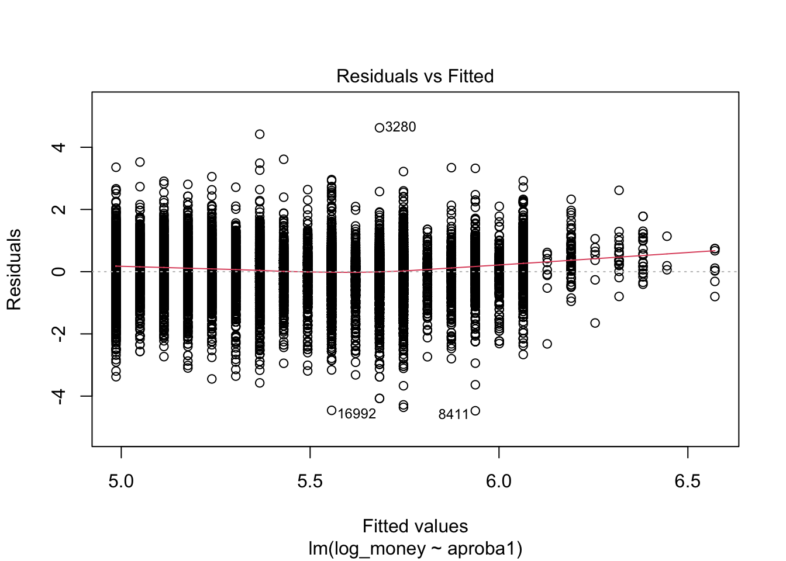
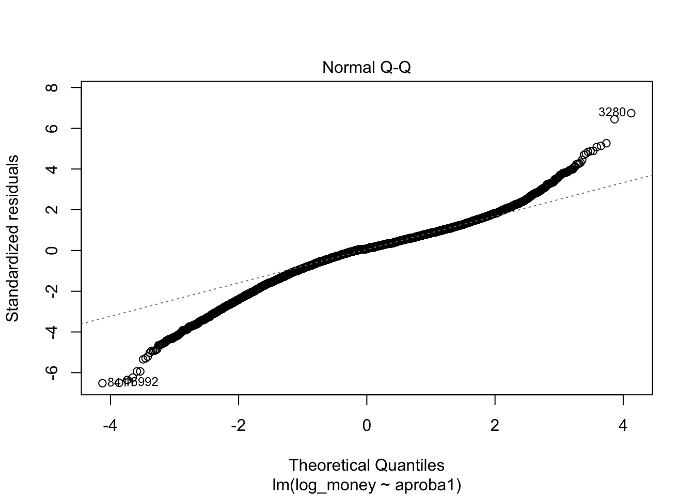
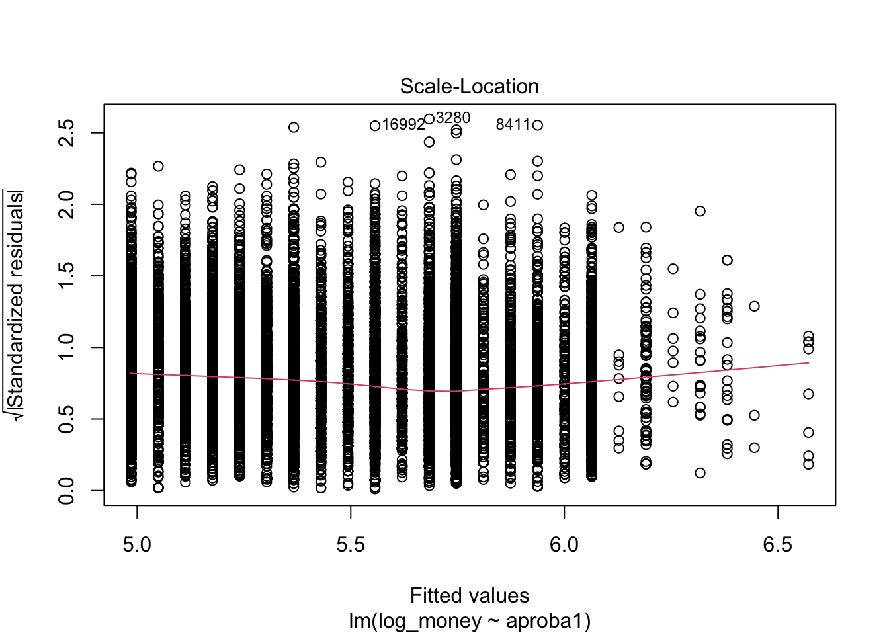
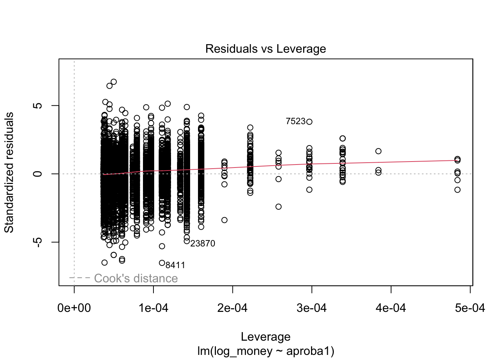
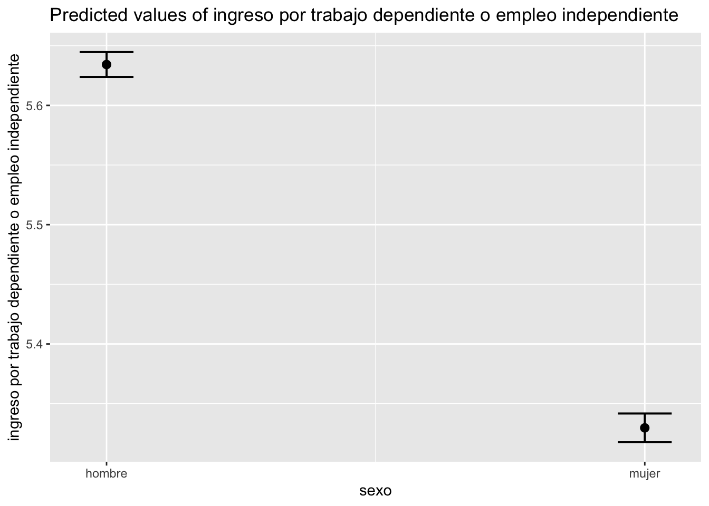

cor_test<-ehpm_2019 %>%with(cor.test(money, aproba1, use ="pairwise")) # prueba de hipótesis.#dos modos de visualizar el resultadocor_test
Pearson's product-moment correlation
data: money and aproba1
t = 47.815, df = 26933, p-value < 2.2e-16
alternative hypothesis: true correlation is not equal to 0
95 percent confidence interval:
0.2686776 0.2906939
sample estimates:
cor
0.2797225
tidy(cor_test)
estimate
statistic
p.value
parameter
conf.low
conf.high
method
alternative
0.28
47.8
0
26933
0.269
0.291
Pearson's product-moment correlation
two.sided
7.4 Modelo simple
\[y=\beta_o+\beta_1x +\epsilon\] Donde los parámetros \(\beta_o\) y \(\beta_1\) describen la pendiente y el intercepto de la población, respectivamente.
No está muy bien comportada, pero ligeramente es mejor con logaritmo
ehpm_2019 %<>%mutate(log_money=log(money))
Una vez transformada nuestra variable, corremos el modelo
Para el ajuste global del modelo, podemos utilzar el comando “glance()” sobre el objeto de nuestro modelo, ello nos dará la información correspondiente:
glance(modelo) # resultado ajuste global
r.squared
adj.r.squared
sigma
statistic
p.value
df
logLik
AIC
BIC
deviance
df.residual
nobs
0.167
0.167
0.686
5.42e+03
0
1
-2.81e+04
5.62e+04
5.62e+04
1.27e+04
26933
26935
Otra manera de ver este ajuste es con el comando “anova()”:
anova(modelo)
Df
Sum Sq
Mean Sq
F value
Pr(>F)
1
2.55e+03
2.55e+03
5.42e+03
0
26933
1.27e+04
0.471
7.5 Diagnósticos
plot(modelo)




7.5.1 1. Outliers y Normalidad
# Assessing Outlierscar::outlierTest(modelo) # Bonferonni p-value for most extreme obs
Call:
lm(formula = log_money ~ aproba1 + r104)
Residuals:
Min 1Q Median 3Q Max
-4.5924 -0.3410 0.0453 0.3923 4.5045
Coefficients:
Estimate Std. Error t value Pr(>|t|)
(Intercept) 5.1099026 0.0087773 582.17 <2e-16 ***
aproba1 0.0632017 0.0008433 74.95 <2e-16 ***
r104mujer -0.2848452 0.0082718 -34.44 <2e-16 ***
---
Signif. codes: 0 '***' 0.001 '**' 0.01 '*' 0.05 '.' 0.1 ' ' 1
Residual standard error: 0.6718 on 26932 degrees of freedom
Multiple R-squared: 0.2026, Adjusted R-squared: 0.2025
F-statistic: 3420 on 2 and 26932 DF, p-value: < 2.2e-16
Este modelo tiene coeficientes que deben leerse “condicionados”. Es decir, en este caso tenemos que el coeficiente asociado a la edad, mantiene constante el valor de sexo y viceversa.
¿Cómo saber is ha mejorado nuestro modelo? Podemos comparar el ajuste con la anova, es decir, una prueba F
pruebaf0<-anova(modelo, modelo1)pruebaf0
Res.Df
RSS
Df
Sum of Sq
F
Pr(>F)
2.69e+04
1.27e+04
2.69e+04
1.22e+04
1
535
1.19e+03
2.41e-254
Como puedes ver, el resultado muestra un Df de 1 (lo que indica que el modelo más complejo tiene un parámetro adicional) y un valor p muy pequeñ. Esto significa que agregar el sexo al modelo lleva a un ajuste significativamente mejor sobre el modelo original.
Para cambiar la categoría de referencia podemos utilizar el comando “relevel”
Call:
lm(formula = log_money ~ aproba1 + r104 + r106)
Residuals:
Min 1Q Median 3Q Max
-4.5813 -0.3285 0.0633 0.3879 4.5576
Coefficients:
Estimate Std. Error t value Pr(>|t|)
(Intercept) 4.6807034 0.0159112 294.18 <2e-16 ***
aproba1 0.0713235 0.0008655 82.41 <2e-16 ***
r104mujer -0.3045821 0.0081415 -37.41 <2e-16 ***
r106 0.0095580 0.0002979 32.08 <2e-16 ***
---
Signif. codes: 0 '***' 0.001 '**' 0.01 '*' 0.05 '.' 0.1 ' ' 1
Residual standard error: 0.6593 on 26931 degrees of freedom
Multiple R-squared: 0.2319, Adjusted R-squared: 0.2318
F-statistic: 2710 on 3 and 26931 DF, p-value: < 2.2e-16
Y podemos ver si introducir esta variable afectó al ajuste global del modelo
pruebaf1<-anova(modelo1, modelo2)pruebaf1
Res.Df
RSS
Df
Sum of Sq
F
Pr(>F)
2.69e+04
1.22e+04
2.69e+04
1.17e+04
1
447
1.03e+03
1.12e-221
Hoy que tenemos más variables podemos hablar de revisar dos supuestos más.
7.6.2 Otros supuestos
Además de los supuestos de la regresión simple, podemos revisar estos otros. De nuevo, usaremos la librería “car”,
Linealidad en los parámetros (será más díficil entre más variables tengamos)
La normalidad también, porque debe ser multivariada
Multicolinealidad La prueba más común es la de Factor Influyente de la Varianza (VIF) por sus siglas en inglés. La lógica es que la multicolinealidad tendrá efectos en nuestro R2, inflándolo. De ahí que observamos de qué variable(s) proviene este problema relacionado con la multicolinealidad.
Si el valor es mayor a 5, tenemos un problema muy grave.
car::vif(modelo2)
aproba1 r104 r106
1.093615 1.005795 1.099641
7.6.3 Heterocedasticidad
El problema de la heterocedasticidad es que los errores estándar de subestiman, por lo que si estos están en el cociente de nuestro estadístico de prueba t, esto implicaría que nuestras pruebas podrían estar arrojando valores significativos cuando no lo son.
Con los efectos marginales, por otro lado medimos el efecto promedio, dejando el resto de variables constantes.
plot_model(modelo2, type="eff", terms ="aproba1")
Package `effects` is not available, but needed for `ggeffect()`. Either install package `effects`, or use `ggpredict()`. Calling `ggpredict()` now.FALSE
plot_model(modelo2, type="eff", terms ="r104")
Package `effects` is not available, but needed for `ggeffect()`. Either install package `effects`, or use `ggpredict()`. Calling `ggpredict()` now.FALSE

¿Es el mismo gráfico que con “pred”? Veamos la ayuda
Package `effects` is not available, but needed for `ggeffect()`. Either install package `effects`, or use `ggpredict()`. Calling `ggpredict()` now.FALSE
Muchas veces las variables explicativas van a tener relación entre sí. Por ejemplo ¿Las remuneraciones tendrán que ver con el sexo y afectan no sólo en intercepto si no también la pendiente? Para ello podemos introducir una interacción
modelo_int1<-lm(log_money ~ aproba1 * r104 , data = ehpm_2019, na.action=na.exclude)summary(modelo_int1)
Call:
lm(formula = log_money ~ aproba1 * r104, data = ehpm_2019, na.action = na.exclude)
Residuals:
Min 1Q Median 3Q Max
-4.5581 -0.3362 0.0528 0.3904 4.5186
Coefficients:
Estimate Std. Error t value Pr(>|t|)
(Intercept) 5.522459 0.024846 222.264 < 2e-16 ***
aproba1 0.047565 0.002626 18.112 < 2e-16 ***
r104 -0.371369 0.016055 -23.131 < 2e-16 ***
aproba1:r104 0.010609 0.001688 6.286 3.3e-10 ***
---
Signif. codes: 0 '***' 0.001 '**' 0.01 '*' 0.05 '.' 0.1 ' ' 1
Residual standard error: 0.6713 on 26931 degrees of freedom
Multiple R-squared: 0.2037, Adjusted R-squared: 0.2036
F-statistic: 2297 on 3 and 26931 DF, p-value: < 2.2e-16
Esta interacción lo que asume es que las pendientes pueden moverse (aunque en este caso específico no lo hacen tanto porque no nos salió significativa)